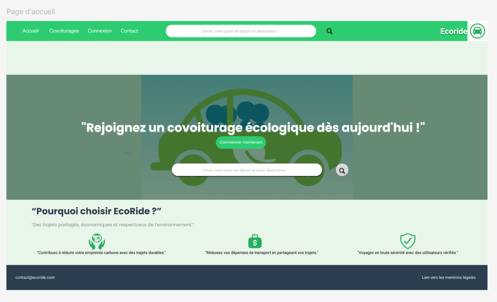
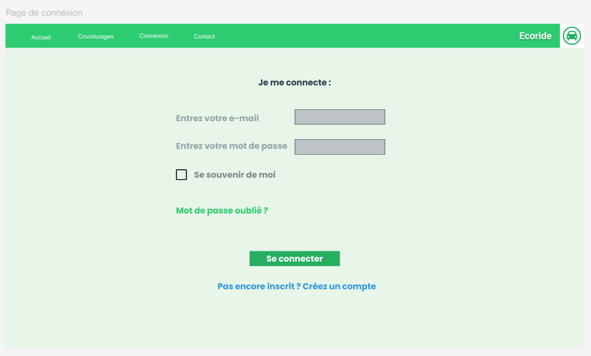
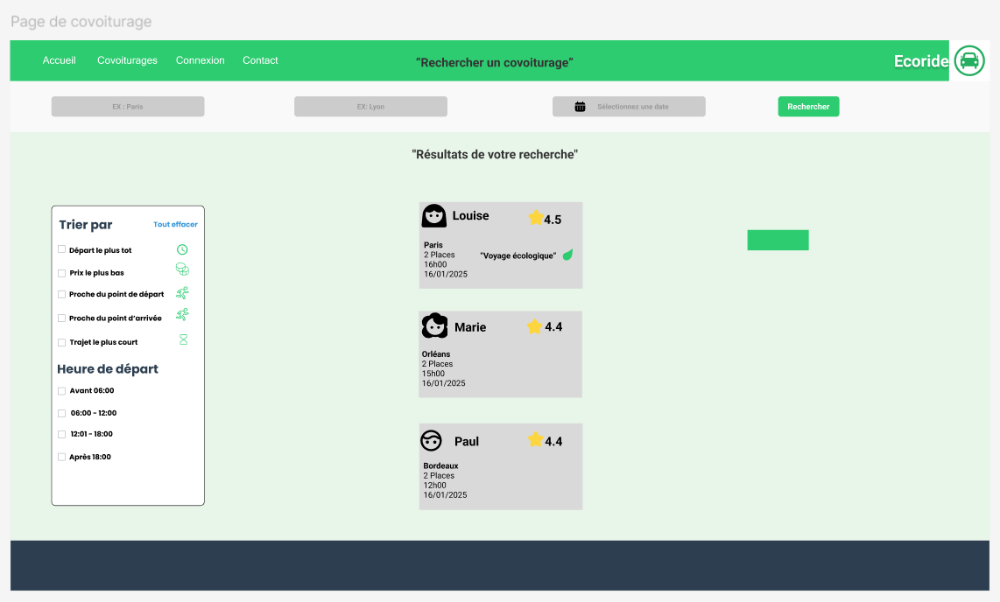
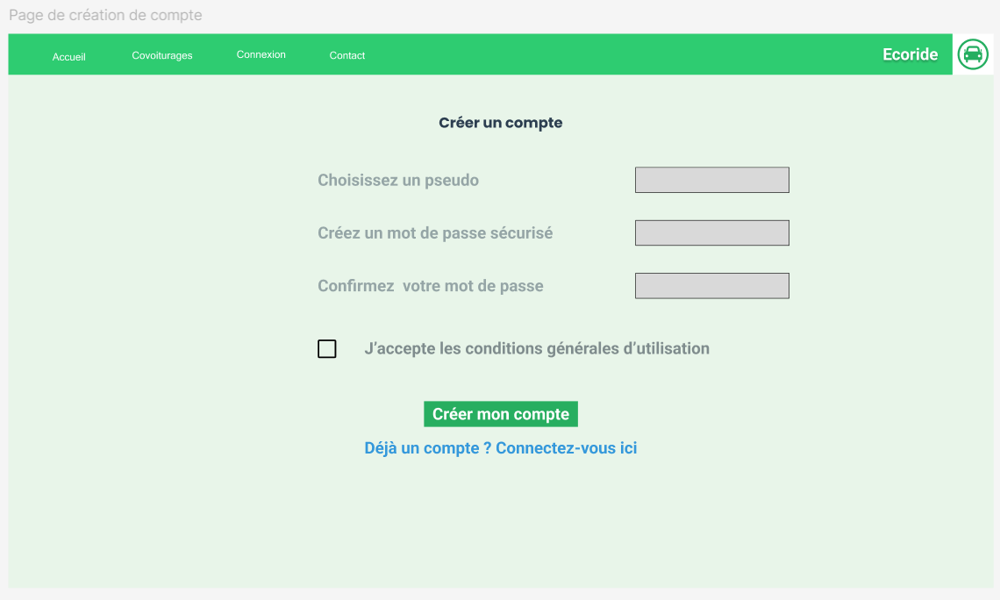
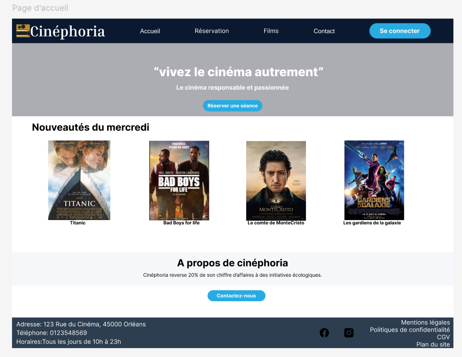
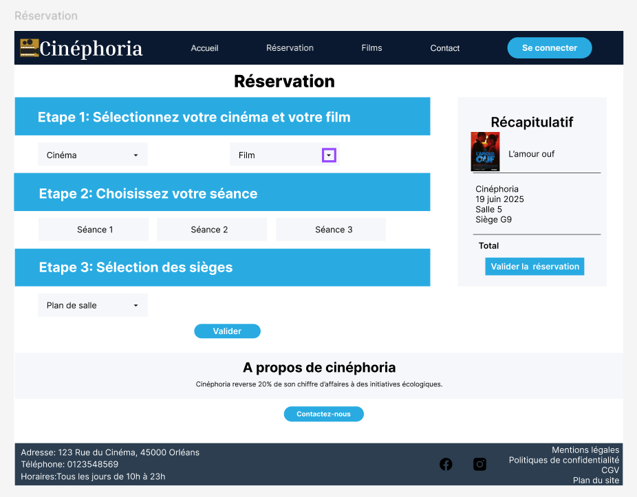
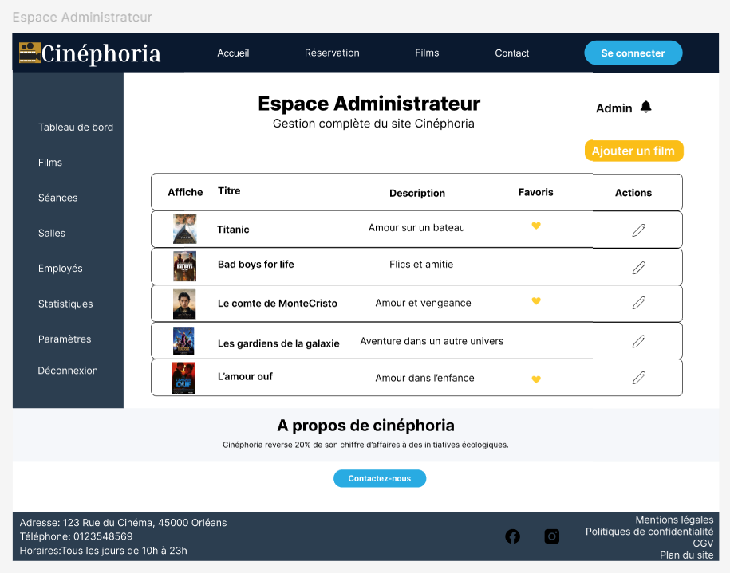

Ma formation en design m'a appris à me demander pourquoi avant comment. Chaque projet ci-dessous montre les deux couches : la décision d'interface, et la décision technique qui la fait tenir.
Projets
Dashboard météo interactif
Les gens veulent une météo qui se souvient de leurs villes et s'adapte à leur environnement, sans réglages manuels répétés à chaque visite.
Historique des villes visible en un coup d'œil, bascule °C/°F et mode sombre/clair accessibles sans quitter l'écran principal.
Géolocalisation automatique au chargement, appel à une API météo publique, état persistant géré côté client en React.
Dashboard fonctionnel déployé sur Vercel, réutilisable comme base pour d'autres projets orientés données.
EcoRide — covoiturage écologique
Conçu sur Figma avant tout développement, avec une identité verte associée à l'écologie.




Faciliter des trajets partagés économiques et écologiques, avec un système clair de recherche, de réservation et de confiance entre passagers.
Maquettes conçues sur Figma en partant de wireframes basse fidélité, avant de passer à une identité verte associée à l'écologie, avec notes et avis passagers visibles pour installer la confiance.
Frontend en React et Tailwind CSS, backend en PHP/Laravel avec MySQL et MongoDB, gestion de projet sur Trello, déploiement sur Fly.io.
Application complète déployée : recherche de trajets, fiche détaillée par covoiturage, création de compte et connexion fonctionnelles.
Cinéphoria — réservation de cinéma
Une chaîne de cinémas avait besoin d'une plateforme complète pour présenter sa programmation, vendre des billets en ligne et gérer ses salles, employés et incidents techniques, avec trois publics différents : visiteurs, employés et administrateurs.
Charte graphique dédiée (bleu nuit, or, bleu azur) pensée sur Figma avant tout développement, avec un parcours de réservation en 3 étapes clarifié et des espaces distincts pour chaque rôle utilisateur.
Backend PHP/PDO avec MySQL pour les données transactionnelles et MongoDB pour le tableau de bord, complété par une application mobile Flutter (billets, QR code) et une application bureautique Python pour la gestion des incidents.
Écosystème de trois applications interconnectées, déployé avec authentification JWT sécurisée, gestion de projet suivie sur Trello et dépôt Git organisé en branches main/develop/feature.



Compétences
| Outil | Catégorie | Usage |
|---|---|---|
| React | Frontend | Quotidien |
| JavaScript | Frontend | Quotidien |
| HTML / CSS | Frontend | Quotidien |
| Tailwind CSS | Frontend | En projets |
| PHP | Backend | En projets |
| Laravel | Backend | En projets |
| MySQL | Backend | En projets |
| MongoDB | Backend | En projets |
| Figma | Design | En projets |
| Git / GitHub | Outils | Quotidien |
| Trello | Outils | En projets |
| VS Code | Outils | Quotidien |
| Vercel | Déploiement | Quotidien |
| Fly.io | Déploiement | En projets |
Contact
Une idée de projet ou une question ? Écris-moi.